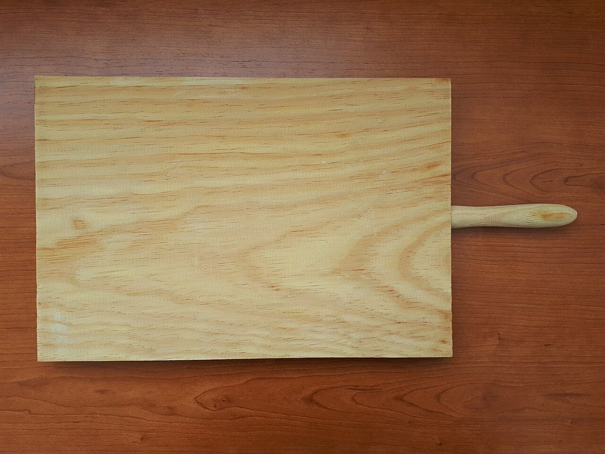
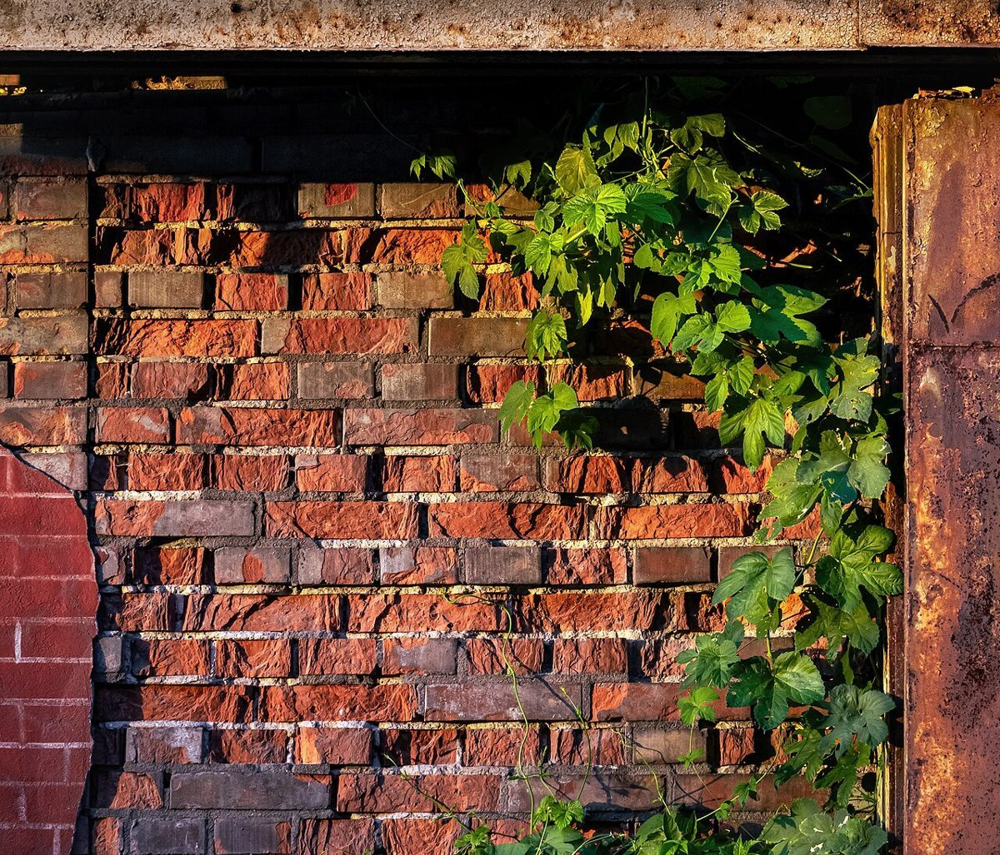

ベーカリー / 千葉県千葉市花見川区幕張本郷
レンガのおうち
千葉市花見川区幕張本郷にあるベーカリー「レンガのおうち」のご案内ページです。営業時間やメニューなど、詳しいことは準備中。まずはInstagramをのぞいてみてください。

制作側の連想
「レンガのおうち」から、三軒目の家を思う
店名の由来は分かりません。制作側は「レンガのおうち」という言葉から、わら・木・レンガと三軒の家を建てていく、あの昔話を連想しました。そこでこのページは、一軒目から三軒目へ順に家を建てていく作りにしています。お店の理念・由来とは無関係の、制作側の連想です。お店がレンガ造りかどうかも分かりません。
一軒目
1わらの家
パンのもとになる麦。ここでは一軒目を、麦の穂の黄金色に見立てました(パンの材料の話であり、お店のこだわりを示すものではありません)。

二軒目
2木の家
二軒目は木目の色。木の台や板は、パンのまわりでよく見かける素材です(お店の道具とは関係ありません)。

三軒目
3レンガの家
三軒目はレンガ。パンを焼く窯にもレンガが使われることがあり、屋号とも響き合うと制作側は感じました(お店の設備ではありません)。



ご案内
お店のこと(確認できたものだけ)
| 所在地 | 〒262-0033 千葉県千葉市花見川区幕張本郷１丁目１２−８ |
|---|---|
| 電話 | なし |
| 営業時間 | 準備中 |
| 定休日 | 準備中 |
| ご予約 | 準備中 |
| 駐車場 | 準備中 |
| SNS | Instagram @rengano.ouchi |